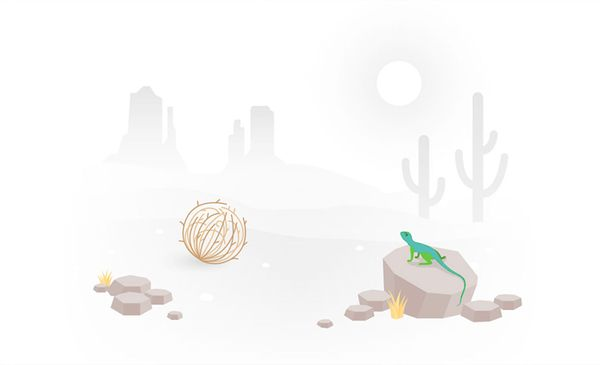

راستیآزمایی چرنوبیل؛ واقعا چه رخ داد؟ فاجعهی چرنوبیل واقعا چه بود و چه بخشهایی از مینیسری چرنوبیل با حقیقت مطابقت داشت؟ شاهدین این فاجعه از آن روزها چه تعریف کردهاند؟
به زبان ساده تئوری توطئه؛ همش کار خودشونه؟ تئوری توطئه علت تمام وقایع را توطئهی دستهای پنهان و سازمانهای مخوف میپندارد. اما چرا تئوریهای توطئه برای مردم جذابیت دارد؟
به زبان ساده احراز هویت دو عاملی به زبان ساده احراز هویت دو عاملی چیست و چگونه به امنیت حسابهای شما کمک میکند؟ چگونه قابل استفاده است و چه سرویسهایی از آن استفاده میکنند؟
به زبان ساده حریم خصوصی به زبان ساده اگر چیزی برای مخفی کردن ندارید، چرا باید نگران نقض حریم خصوصی خود در اینترنت باشید؟ اگر نگرانید، باید چه کنید؟
به زبان ساده اثر تماشاگر؛ چه کسی برخیزد؟ چرا وقتی مامور پلیس با خشونت با دختر خیابان انقلاب برخورد کرد، کسی اعتراض نکرد؟ چرا وقتی مردم فردی را میبینند که روی زمین افتاده، کمکی نمیکنند؟ اثر تماشاگر چیست و برای مقابله با آن چه باید کرد؟
 به زبان ساده غذا رو نخور حیوان! آیا غذا دادن به حیوانات وحشی، به بقای آنها در طبیعت کمک میکند و یا موجب مرگ تعداد بیشتری از آنها میشود؟